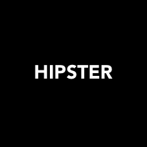
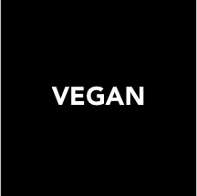
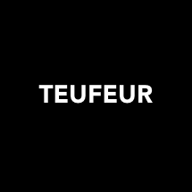
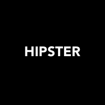
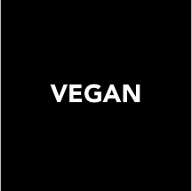
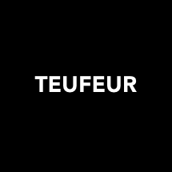
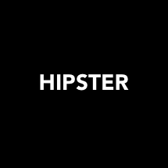
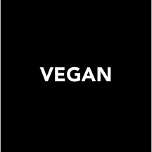
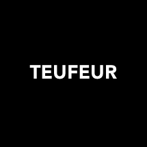

Nous posons systématiquement une étiquette sur la tête de chaque personne que nous voyons, cela est naturel. Notre cerveau classe, catégorise toutes les informations par apport à des modèles préexistants que l’on connait ou que l’on nous a inculqués. Manque de recul, de connaissance, et tri inconscient de l’information, tout cela va fausser l’idée que l’on se fait de la réalité et renforcer notre jugement malheureusement souvent trop rapide.


